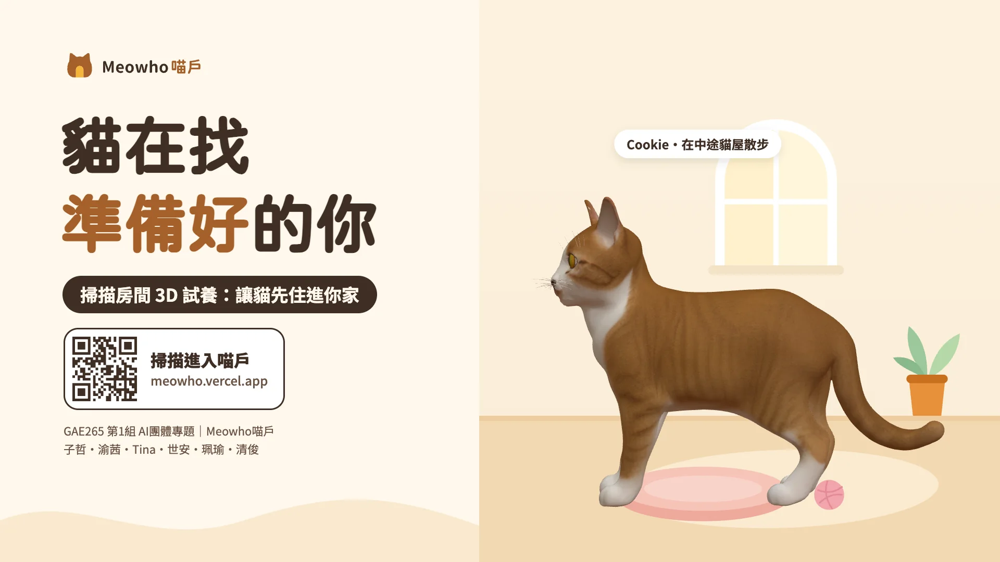

Meowho喵戶：掃描房間 3D 試養，讓貓先住進你家
總覽Overview
- 流浪貓從中途到新家的領養平台，用 AI 和 3D 讓想養貓的人在帶貓回家前，先確認自己準備好了。
- 擔任組長：負責整合 6 人的分工與主線串接（建立貓咪 → 提出領養 → 移轉貓咪），並開發「AI 幫我找貓」語意搜尋。
要解決的問題Problem
- 找貓時：領養人只能看照片挑貓，看不出合不合。
- 審核時：中途沒有客觀依據，只能靠直覺判斷。
- 帶回家後：新手才發現自己沒準備好，最後退養。
關鍵成果Key Outcomes
- 正式網站已上線（meowho.vercel.app）。中途可以用一段話建檔、用一張照片產生 3D 貓；領養人拍一支居家影片就能把房間轉成 3D，讓貓先住進來試養，最後產出試養報告。
- 技術：Next.js、Supabase pgvector 語意搜尋、Azure OpenAI，以及 Gaussian Splatting 影片轉 3D 房間。